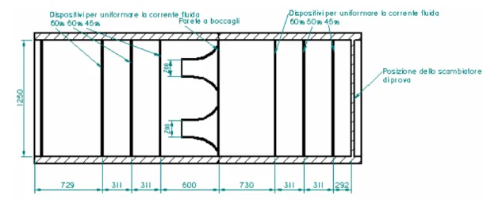
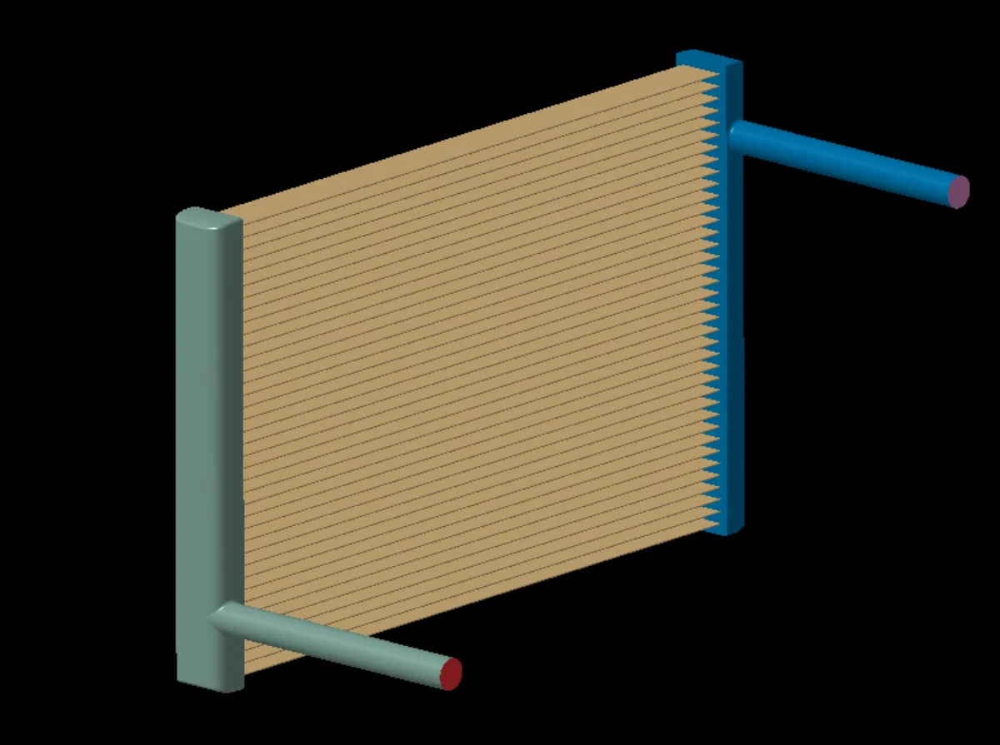
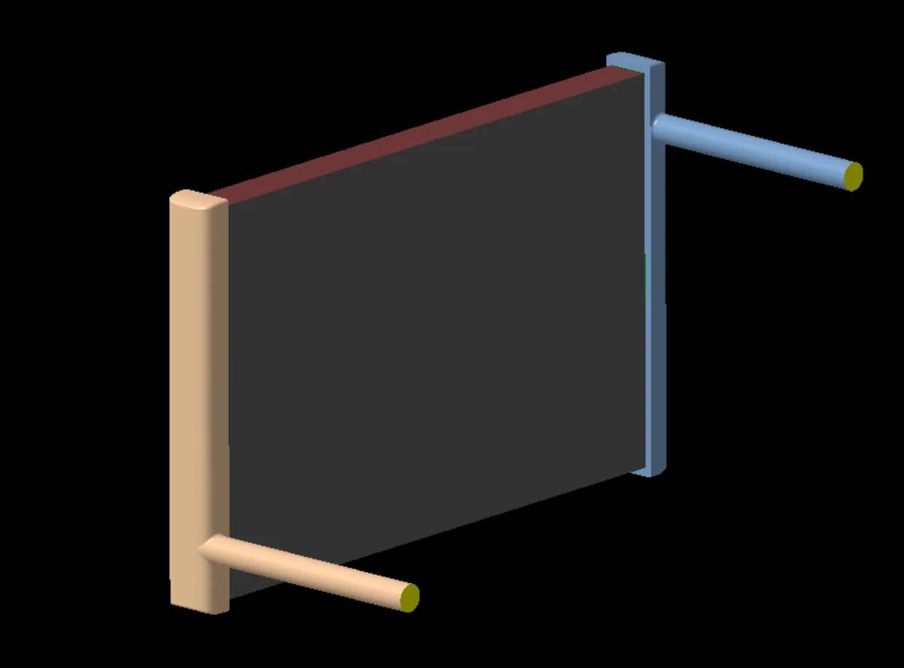
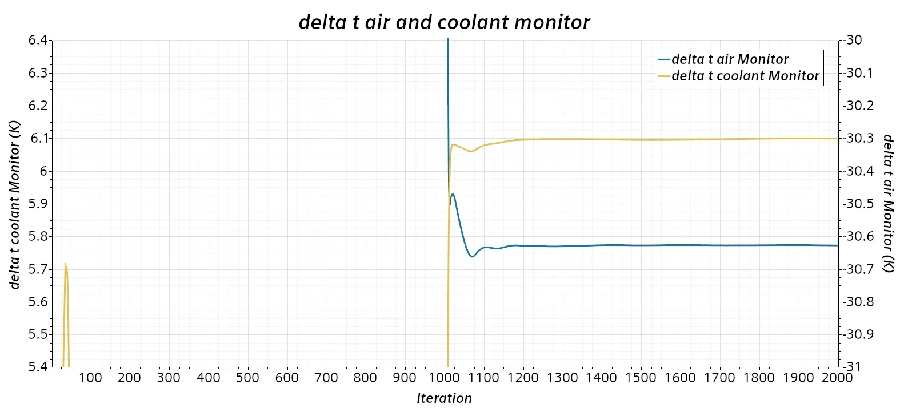

Objective
Validate a radiator CFD model against experimental values by designing the test chamber to the University of Bergamo specification and calibrating the core with the porous media and dual stream models.
Geometry
The chamber geometry was designed from the 2D drawings provided by the University of Bergamo.

The radiator was supplied by Tatuus and needed geometry preparation to run with the dual stream heat transfer model.


Data extraction and simulation setup
| Parameter | Value |
|---|---|
| Air density | 1.184 kg/m³ |
| Turbulence model | k-Epsilon |
| Solver | RANS |
| Number of cells | 6.8 million |
| y+ | Mixed: < 1 on the nozzles, > 30 elsewhere |
Refinement groups, as % of base size (15 mm):
| Component | Category | Details | Min size (%) | Target size (%) |
|---|---|---|---|---|
| Tunnel (external surface) | Group 1 | Nozzles | 7 | 25 |
| Group 2 | Chamber, mass outlet, interfaces | 10 | 100 | |
| Group 3 | Room | 60 | 600 | |
| Radiator (internal) | Radiator trays | 15 | 1.5 | |
| Porous regions | Direct mesh | Coolant cores, air cores | 10 | 100 |
| Refinement | Volumetric | Flow path refinement | – | 100 |
Prism layer settings:
| Details | Layers | First layer (mm) | Total thickness (mm) |
|---|---|---|---|
| Nozzles | 12 | 0.02 | 3.9 |
| Radiator trays (internal) | 2 | 0.8 | 2 |
| Chamber, interfaces | 1 | 1 | 1 |
| Walls, inlet, outlet | 0 | 0 | 0 |
Air side
The radiator technical sheet was used to extract a quadratic fit of pressure drop for both the coolant and air sides. The inertial and viscous coefficients were then computed by dividing the fit coefficients by the radiator thickness:
Viscous coefficient = 17.543 / 0.04 = 438.575
Coolant side
The cooling circuit was simulated on its own using the previously validated mesh. Pressure drop and velocity were extracted at the channel boundaries to isolate radiator core losses from circuit and tank losses, so the porous region model could be calibrated correctly.
The CFD pressure drop vs velocity for the overall circuit was compared with the experimental curve to calibrate the model:
After aligning the simulation with the experimental data, the porous region pressure drop was extracted and plotted against velocity to calculate the porous model coefficients:
Viscous coefficient = 2502.8 / 0.565 = 4429.73
A Q map was also derived from the experimental data, mapping the hot and cold mass flow rates of the heat exchanger to heat loss values.
CFD results
Coolant and air side pressure drop monitors converged after 1850 iterations. A further 150 iterations were run and averaged to give the reference value.

A test simulation gave a linear relation between the face velocity in front of the radiator and the test chamber outlet mass flow rate. A Design Manager study with 5 operating points across the curve was then set up to compare the CFD model with the experimental data.
Air side validation
| Face velocity (m/s) | Rad Δp exp (Pa) | Rad Δp CFD (Pa) | Diff | Rad ΔT exp (°C) | Rad ΔT CFD (°C) | Diff |
|---|---|---|---|---|---|---|
| 11.02 | 527.09 | 553.06 | 4.93% | −29.83 | −24.31 | −18.51% |
| 6.94 | 254.00 | 274.71 | 8.15% | −42.70 | −33.30 | −22.02% |
| 6.94 | 264.00 | 276.07 | 4.57% | −42.50 | −33.75 | −20.60% |
| 4.92 | 155.42 | 168.70 | 8.54% | −45.92 | −38.84 | −15.41% |
| 9.05 | 388.84 | 414.15 | 6.51% | −40.70 | −30.63 | −24.75% |
Coolant side validation
| Coolant ṁ (g/s) | Δp exp (mbar) | Δp CFD (mbar) | Diff |
|---|---|---|---|
| 961.3 | 22.30 | 21.15 | −5.16% |
| 1438.5 | 43.31 | 46.02 | 6.26% |
| 1921.0 | 77.79 | 80.95 | 4.06% |
| 2411.1 | 123.93 | 126.45 | 2.03% |
| 2729.3 | 157.00 | 161.37 | 2.78% |
| Coolant ṁ (g/s) | ΔT exp (°C) | ΔT CFD (°C) | Diff | Heat rejection exp (kW) | Heat rejection CFD (kW) | Diff |
|---|---|---|---|---|---|---|
| 961.3 | 17.34 | 16.63 | −4.10% | 69.78 | 68.16 | −2.32% |
| 1438.5 | 10.24 | 9.67 | −5.52% | 61.65 | 59.61 | −3.32% |
| 1921.0 | 7.80 | 7.35 | −5.79% | 62.60 | 60.53 | −3.31% |
| 2411.1 | 4.93 | 4.81 | −2.33% | 49.73 | 49.94 | 0.43% |
| 2729.3 | 6.55 | 6.10 | −6.88% | 74.85 | 71.39 | −4.63% |
Validation and engineering outcome
The CFD model showed good agreement with experimental data for coolant pressure losses and heat rejection. The air side ΔT, however, showed a higher error of 15–25%, highlighting limitations in the current modelling approach.
Further work will integrate the radiator model into the F1 model CFD to analyse the effect of thermal management on vehicle drag and overall performance.